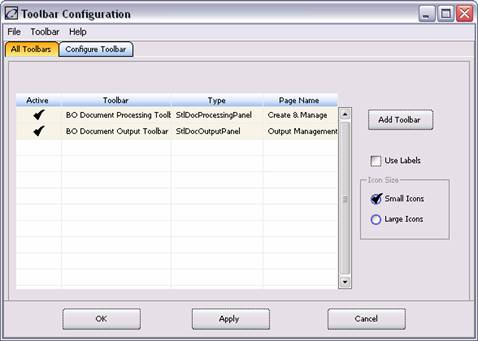
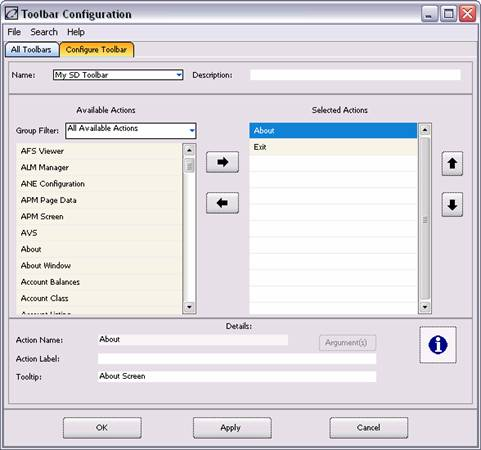

The Toolbar Configuration window allows the user to change the configuration of the toolbar, e.g., modify the configuration of the toolbar icons; import, export, display, hide, and create new panels on the toolbar; and add or remove toolbar icons from a toolbar panel.
See Toolbar Area Configuration Menu
This window is accessed from the Toolbar Area Configuration Menu. For illustration purposes, the following is an example of how it is accessed from the Settlement Desktop:
1. Start the Operations Manager.
2. Click the Settlement Desktop icon. The Settlement Desktop window displays.
3. Right-click on any area of the toolbar. The Toolbar Area Configuration Menu displays.
4. Select Configure.
5. The following window displays:

This window contains the following tabs:
|
Tab |
Description |
|
All Toolbars |
Allows the user to manage the panels and icons on the toolbar, e.g., activate, add, remove, replace, export, and import a toolbar panel; display the label of toolbar icons; and change the size of toolbar icons. |
|
Configure Toolbar |
Allows the user to manage the actions on the toolbar panels, i.e., specify the toolbar icons that will show on a toolbar panel. See Toolbar Configuration window of the Trader Desktop/OpenLink Desktop. |
This window contains the following menu items:
|
Menu |
Item |
Description |
|
File |
Print Screen |
Prints the current window. |
|
|
Exit |
Closes the window. |
|
Toolbar |
Add… |
Allows the user to create a new toolbar panel. The user will be prompted to enter the toolbar panel name. A user-defined toolbar panel is classified as a “General” type of toolbar. |
|
|
Replace… |
Replaces the currently highlighted toolbar panel with the only available toolbar panel or with the selected panel on the toolbar panel pick list. |
|
|
Remove |
Removes the highlighted toolbar panel from the table. Only “General” toolbar types can be removed. |
|
|
Import New Toolbar |
Opens a file browser allowing the user to import a toolbar panel configuration (in xml format) as a new toolbar panel. |
|
|
Import Into Toolbar |
Opens a file browser allowing the user to import a toolbar panel configuration (in xml format) into the highlighted toolbar panel. Users are not allowed to import a toolbar panel configuration into an OLF-defined toolbar panel. |
|
|
Export |
Opens a file browser allowing the user to save the configuration (in xml format) of the highlighted toolbar panel to an external file. Only one panel may be exported at a time. |
|
Help |
Help |
Displays the system help files. |
This window contains the following buttons:
|
Button |
Description |
|
Add Toolbar |
Has the same function as the Toolbar à Add…. Clicking this button displays a pick list of toolbar panels if user-defined panels exist and these panels have not been added to the table. Select the toolbar panel to display on the table. To create a new toolbar panel, select “<Create New>.” |
|
Use Labels |
Toggle to display the labels together with the icons. Place a check mark to display the labels. |
|
Small Icons |
Displays the icons in small size. |
|
Large Icons |
Displays the icons in large size. |
|
OK |
Applies changes to the toolbar and closes the window. |
|
Apply |
Applies changes to the toolbar. |
|
Cancel |
Cancels changes and closes the window. |
This window contains the following fields:
|
Field |
Description |
||||||
|
Active |
Toggle to activate or display the toolbar panel on the page/tab’s toolbar. Place a check mark to activate a toolbar panel. |
||||||
|
Toolbar |
The name of the toolbar panel. |
||||||
|
Type |
The type of the toolbar panel. There are two types of toolbar panels:
|
||||||
|
Page Name |
The page the toolbar panel displays. If not specified, it displays on all pages/tabs. |

See the Trader (V8.0r1)/OpenLink (V8.0r2 and up) Desktop’s Toolbar Configuration window for the description of the menu items, buttons, and fields.
To save changes on the toolbar panel or toolbar icons on the tab or page, save the actual tab or page configuration. Only user-defined tab or page configurations can be modified and saved.